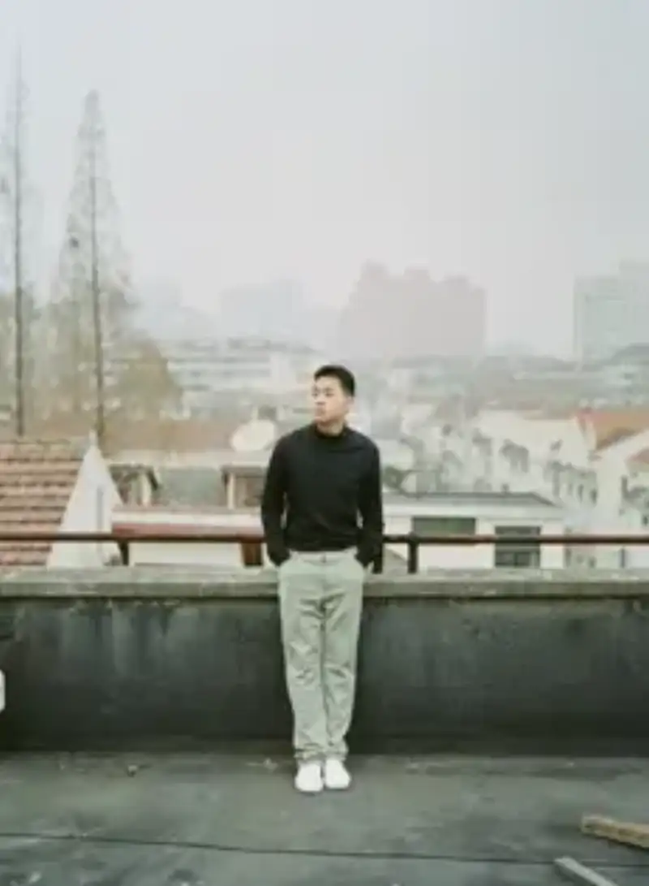
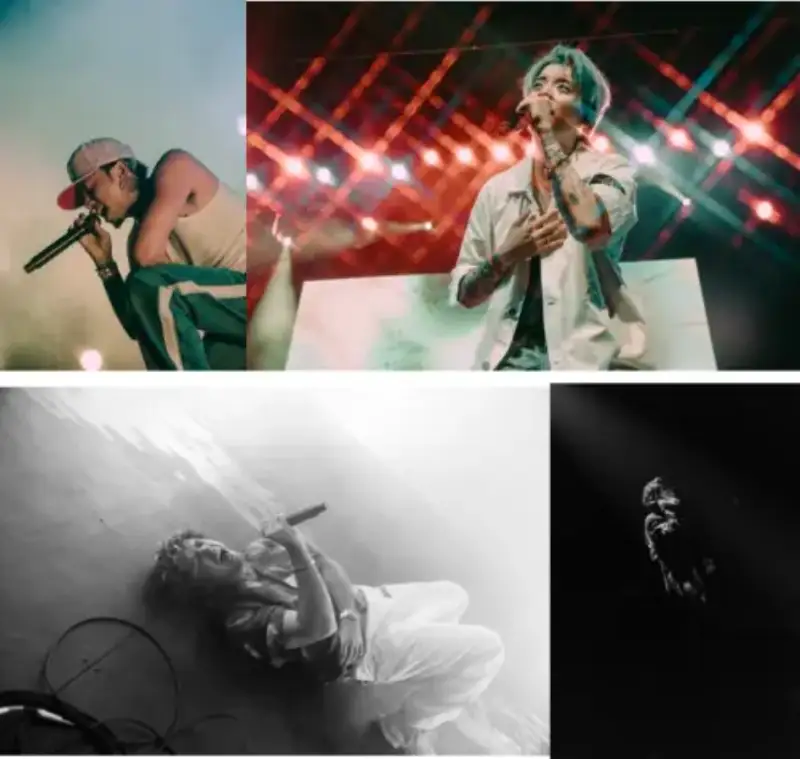
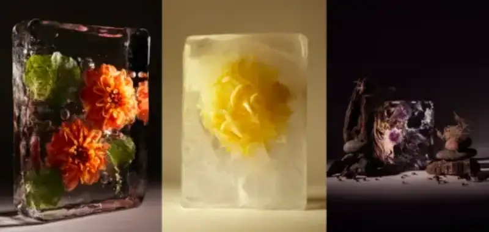
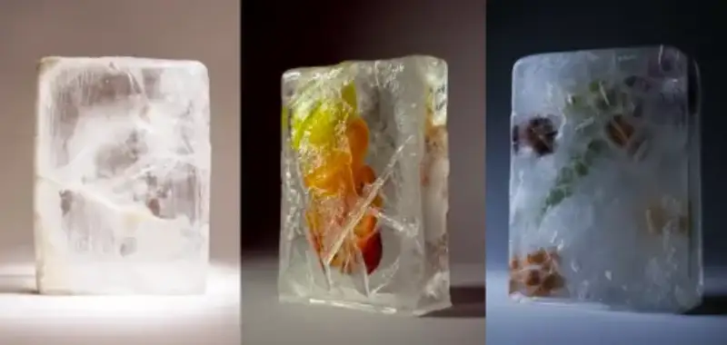

The first time I painted the sky purple, I knew I was different. But this unusual view led to many interesting ideas and combinations. A dark green apple, a red-brown grass. This is my world, the most real and unique art in my eyes. This quote from multidisciplinary artist Zhao Bojun stays with you.

From directing to photography, Zhao's work records artists and brands at home and abroad. In music, he is creative director for sunkis Song Bingqin, and he documents overseas festivals and tours such as Head in the Clouds, Coachella, and Governors Ball. As part of KOE Lab, he has planned music, shoots, and creative work for brands such as YSL, Bottega Veneta, NIKE, and Mercedes-Benz.

Zhao Bojun, Pok Kwan Chiu (Bobby), was born and raised in Shanghai and studied photography at New York University. He works in traditional film and also in newer fields such as virtual AI and 3D modeling. He uses music, video, and installation to widen the limits of visual storytelling and shows work in many dimensions.
Raised across many cultures, Bobby's work has been shown in Shanghai, Hong Kong, London, and New York.
Bobby uses the lens as a bridge to capture the stories of the world around him. He believes art can break boundaries and connect cultures and groups. So each photo carries his energy and pushes the viewer to think. He also keeps trying new media, joining traditional portraits with modeling to show how technology keeps changing photography.
Color blindness: What makes my work unique
Zhao grew up in an artistic family with many relatives in the arts. Once he worked with color, he found that color blindness was a barrier in his art. But this imperfection also gives his work its uniqueness.
I first noticed when my teachers and classmates saw that I painted common things in uncommon colors, such as painting the sky purple as a child. After that, I saw color blindness as something I could not control, and I began to look at it in a more unique way. With practice, I slowly learned the colors people call correct. I can see color the way people expect, but once I could do that, I felt more confident creating freely in my own view. This led to more interesting results. I am proud of it, because it makes my work unique. It is the most honest part of my art.
Color blindness made Bobby see the world differently from a young age, and it helps him use unique colors and angles. Through this unusual view, he invites the audience to see the world in a new way and to challenge the usual ideas of color and form. As a photographer with a music background, Bobby joins music and photography. He adds film score and sound design to his still work, giving the viewer a more immersive experience.
Ice: transparent and translucent, art and photography joined with nature
In FROZEN IN TIME, a food and ecology series shot with creative culinary director Alan Chan in New York in May 2024, Zhao used many colors boldly. This was also a great challenge for him.

Zhao said: This series has two parts: fully transparent ice and translucent ice. As someone with a strong urge for order, I always want things perfect, so seeing them crystal clear gives me great satisfaction. The translucent ice came from an accident, but I think it is the uncertainty I have long wanted to break through in art. Perfect ice is flawless, but translucent ice is more real. Today, post-processing is powerful, and these natural accidents add much beauty to photography.

In the work, Bobby used many colors, which is a challenge for him, and when a frame reaches the image he imagined, the sense of achievement is like no other. Seeing the depth of color and the different textures also satisfies him. In my view, black and white may be more controllable, but the uncertainty of color makes the creative process more interesting, Zhao said.
Breakthrough: From commercial work back to personal art
Because he studied piano and cello as a child, Zhao has worked closely with all music-related visual work (video directing, graphic design, film photography).
I love every part of music, from live sound to post. I now direct music videos, tour with new R&B artists, and work to promote Asian music events abroad. I hope to open a new space for Chinese-language music in the US and international markets.
Much of Zhao's art has been about collaboration, which is a cool thing in itself.
I have never made art alone, because I think many experts and viewpoints add dimensions to my work, so I usually like to collaborate. Whether writing songs or visual art, I value the interaction of working with others, and it sparks many ideas.
After much commercial work, Zhao is now breaking his old patterns and returning to personal series. Unlike collaborative work, he believes a personal series speaks for itself and carries his ideas to a wider audience. So as he finished college, he wanted to make a body of work free from the opinions of those around him, a series he truly cares about and likes.
After graduation, Zhao wants to try more still life. Because I can have an intimate exchange with my subject. I feel my existing commercial work already covers much of what I want to explore, and I cannot stop thinking commercially, but still life has always been a field I keep for myself, Zhao said.